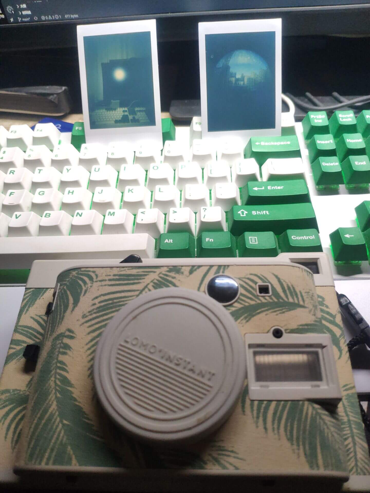
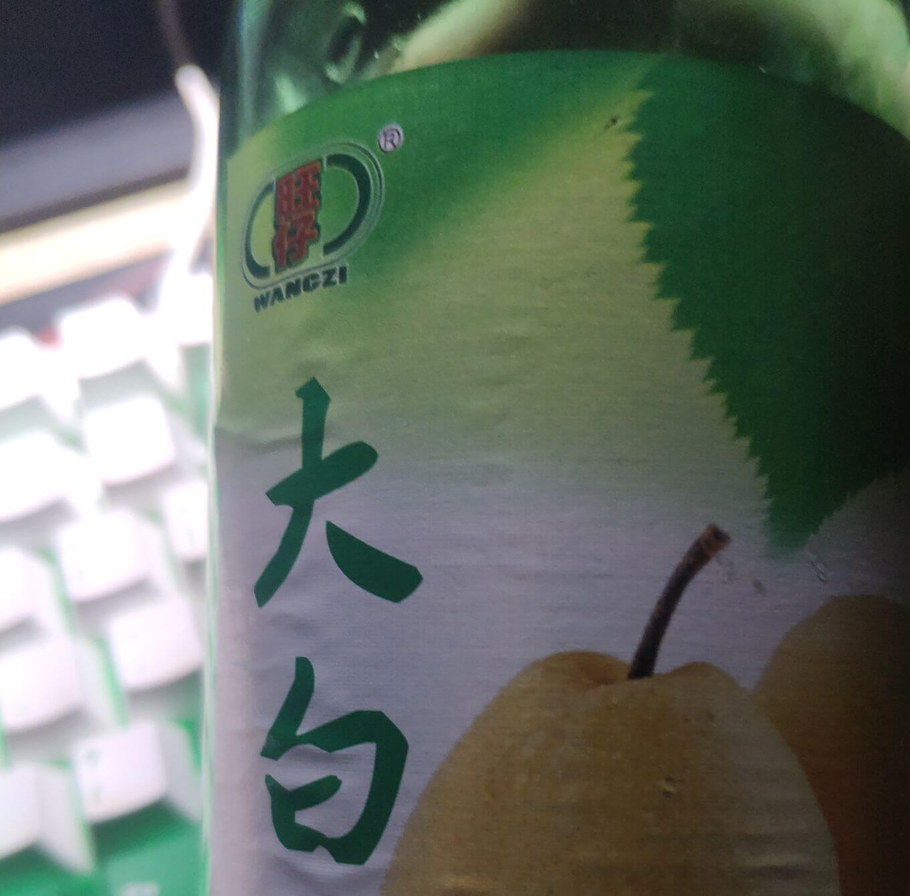
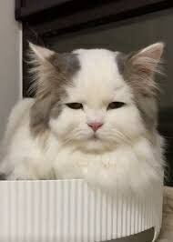

——2002年的第一场雪，比以往时候来的更晚一些。
毫无疑问地说，这首歌非常好听，一下子让人回到过去。
这几天，试了下老家翻出来一件五年前的老物品，一个富士的拍立得相机。
五年前的电池，充了好一会才有反应（摸起来发热，太又没有过热）。
然而究竟是充上电了，迫不及待地装好电池，开机，看着知识点由红变绿，不由心生欣慰之意。
故人往昔所用器具，虽未刻意加护，却也不曾毁损，此刻目视，心间顿生悲凉。
试了下尝试拍照，相纸成像十分之慢（我甚至以为相纸失效了），一来是因为房价光线不足，而来是因为，相纸也是五年前开封的。
从图片上，能看出相机的外边的布纹已经发黄，相片拍出来发绿发暗。
但是居然还能用。真好。
关于相机，也算是一位故人之物。
那时候我买了这个相机，想着送给朋友，但是期间除了一些意外，朋友究竟是再也不能收到我的礼物。
于是我就收了起来，就当是朋友之物，暂寄于此。不日就会取回。
我决定先用着，迟点买上相纸相册，趁着年轻，多拍几张照片，等我有了后代，就给他们看，
看看你爸爸年轻时候还是很帅的！
叭叭这个姐姐是谁啊？
咳咳咳，这是，啊，这是爸爸的一位同事。
看起来和叭叭很像哟(＾Ｕ＾)ノ~ＹＯ
咳咳咳咳咳！
晚餐吃了一份小鸡炖蘑菇+粉条，十分地美味，我还买了一瓶饮料
哈，这饮料满满的廉价味精，甚是古早的味道。
emmm，应该是小时候吃的廉价水果糖的味道。
今天开发颇为，也不说顺利吧，起码尽力啦。有进步，继续加油哦雨雨。
（问题一大堆，底层库全部要重写，最重要的两个库：加载库，缓动库，都还没动手写，头疼。
其实是在写别的去。单纯拼界面都要死了。
群里聊天看到本科生半年后平均工资，游戏策划职位：7.4k。好高啊，比我强多了。
我只是一个底层小前端罢了。
为了钱钱，我要尝试努力一下。
想起一件事，我的某个朋友，说好的新年礼物，估计忘了。
嗯，记一笔小本本。来日方长。
后续：
好吧，朋友解释说是非常讨厌送礼物。
朋友会觉得别人送礼物是负担，因为这样子需要回礼。
我问朋友，妹妹怎么才能和朋友搞好关系，朋友答曰已辞退妹妹。
我有点别的角度的想法：
我送礼物给朋友，只是希望朋友能够开开心心的。
至于回礼，我倒是不是特别在乎，如果朋友一高兴，愿意与我分享一下，或者偶尔给我点惊喜，我当然也会很高兴。
至于功利一点，我觉得收礼送礼是一个人际交完的环节嘛。
以下是一些阴暗一点想法。
嗯……真的是这样交往的么？我已经分不清了。也不说送礼收礼什么的，基础互动都没有哟。（另一个朋友说，都是直接问妹妹需要什么就买什么。
就有那种，感觉自己没有存在意义的感觉。
难道有人能够一直一直默默候着你，你需要的时候（即使你不出声）也默默过来帮忙，然后帮完忙就默默离去？哪图个啥？
哦，你不需要。嗯，也有可能朋友看不上我。
我想着是，总也要有个好点的朋友吧？排队也该轮得上我？
不过也不奇怪，朋友确实很受欢迎，不像我。
所以说怎么和朋友搞好关系？既不能互动，也没有“名分”，更没有“因果”。
还是说我有心理问题？
想不透。
既然如此，反正搞不懂，做好我自己，我该做啥做啥，一些想做的事情直接做，别问，别说，别想失败。
对，别管朋友同不同意，做就是了。
偏激？确实偏激。不过这次，我乐意。
上一次乐意的时候还是上一次，人生难得几回乐意。